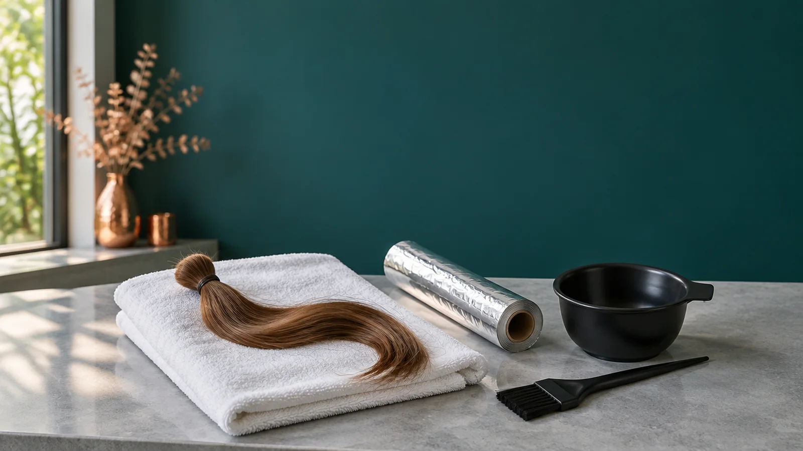
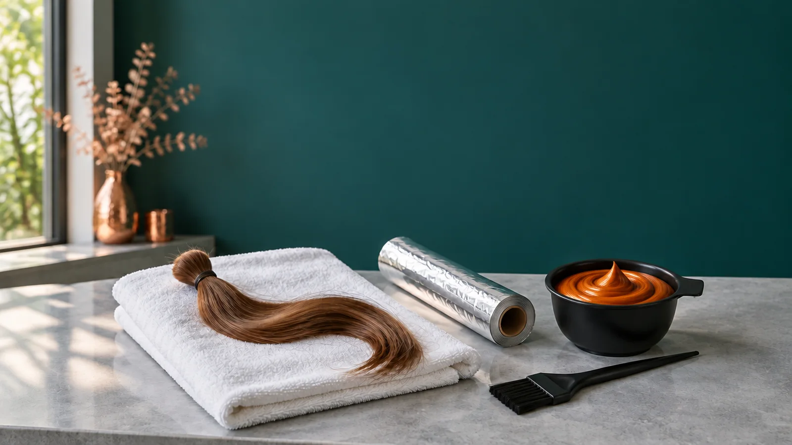
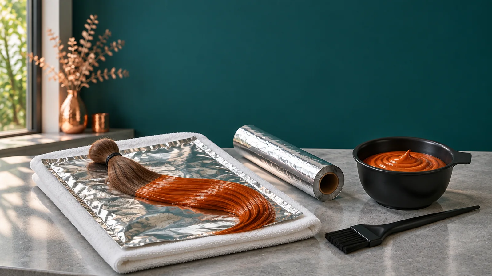
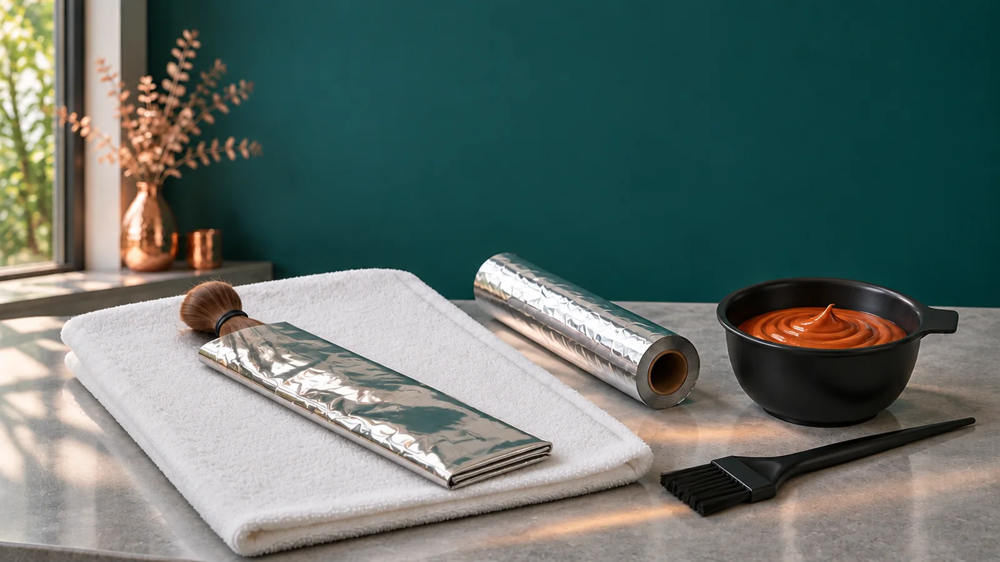
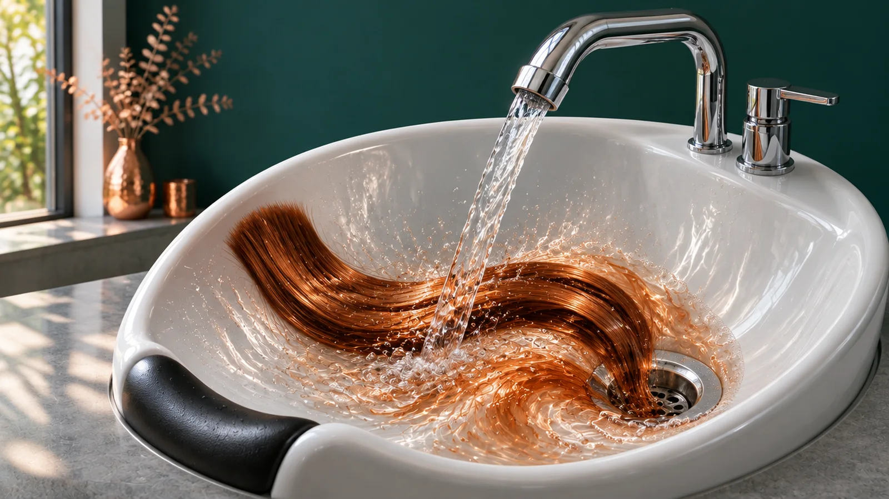
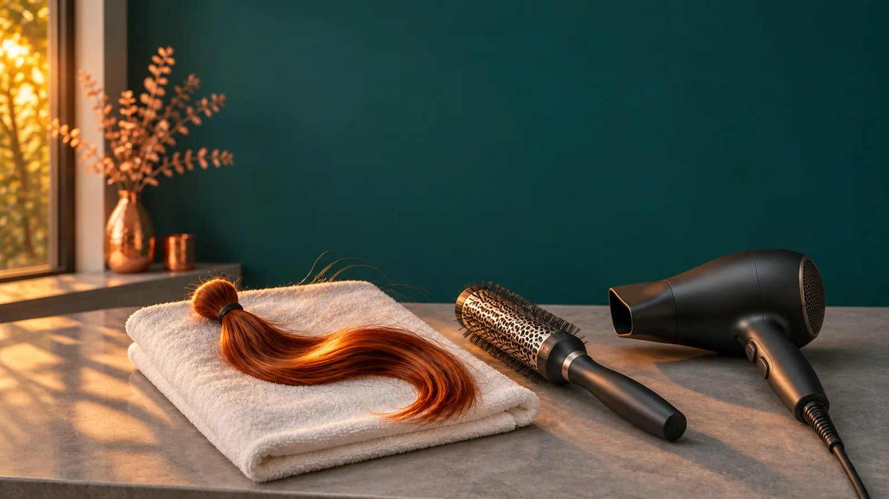

Een goede kleur begint niet met verf, maar met kijken: wat is je eigen kleur, hoe ziet je haar eruit in daglicht, wat heb je eerder gehad en wat wil je nu? Pas als dat duidelijk is, wordt er gemengd.
Kleur · 02 / 07Mengen op maat
Kleur komt zelden zomaar uit één tube. Er wordt gemengd tot de tint klopt bij jouw haar en jouw huid — warmer, koeler, lichter of juist dieper. Romig, zodat het gelijkmatig op het haar komt.
Kleur · 03 / 07Folie voor precisie
Met folie kun je kleur heel precies plaatsen: alleen de lengtes, alleen een paar lokken, of juist van midden tot punt. Zo blijft de rest van het haar zoals het is, en loopt niets door waar het niet hoort.
Kleur · 04 / 07De tijd doet het werk
Na het aanbrengen moet de kleur inwerken. Hoe lang precies, hangt af van je haar en van de kleur die je wilt. Even rustig zitten hoort er gewoon bij — met een kop koffie gaat dat prima.
Kleur · 05 / 07Spoelen en verzorgen
Dan gaat alles eruit met lauw water, tot het helder is. Een verzorgende behandeling sluit het haar weer, zodat de kleur mooi blijft en het haar zacht aanvoelt.
Kleur · 06 / 07Glans tot de laatste lok
Föhnen en in model brengen maken het af. Pas dan zie je echt hoe de kleur valt in het licht. Even kijken, even bijwerken — en je loopt naar buiten met haar dat glanst.
Kleur · 01 / 07Sfeerbeeld00:00 / 00:27
Sfeerbeeld
scroll — zo krijgt een lok een nieuwe kleur

Kapsalon · Grotestraat 393
haar dat glanst, aan de Grotestraat.
Haar! is een kapsalon aan de Grotestraat in Waalwijk. Knippen, kleuren en verzorgen — plan je afspraak online, of bel even.
Een lok, een handdoek, een idee voor een nieuwe kleur.
Een goede kleur begint niet met verf, maar met kijken: wat is je eigen kleur, hoe ziet je haar eruit in daglicht, wat heb je eerder gehad en wat wil je nu? Pas als dat duidelijk is, wordt er gemengd.
Sfeerbeeld

dan de kleur.
Warm koper, romig gemengd, precies op maat.
Kleur komt zelden zomaar uit één tube. Er wordt gemengd tot de tint klopt bij jouw haar en jouw huid — warmer, koeler, lichter of juist dieper. Romig, zodat het gelijkmatig op het haar komt.
Sfeerbeeld

laag voor laag.
Op folie, van midden tot punt, zorgvuldig.
Met folie kun je kleur heel precies plaatsen: alleen de lengtes, alleen een paar lokken, of juist van midden tot punt. Zo blijft de rest van het haar zoals het is, en loopt niets door waar het niet hoort.
Sfeerbeeld

even laten inwerken.
Geduld is ook vakwerk.
Na het aanbrengen moet de kleur inwerken. Hoe lang precies, hangt af van je haar en van de kleur die je wilt. Even rustig zitten hoort er gewoon bij — met een kop koffie gaat dat prima.
Sfeerbeeld

helder spoelen.
Water erover — en daar is hij: de kleur.
Dan gaat alles eruit met lauw water, tot het helder is. Een verzorgende behandeling sluit het haar weer, zodat de kleur mooi blijft en het haar zacht aanvoelt.
Sfeerbeeld

en dan: glans.
Föhnen, borstelen, een laatste blik — klaar.
Föhnen en in model brengen maken het af. Pas dan zie je echt hoe de kleur valt in het licht. Even kijken, even bijwerken — en je loopt naar buiten met haar dat glanst.
Sfeerbeeld
Haar! · Waalwijk
jouw stoel staat klaar.
Aan het eind van het verhaal staat er maar één ding: een lege stoel in het warme licht. Die is voor jou. Of je nu je uitgroei wilt laten bijwerken, een heel nieuwe kleur zoekt of gewoon weer eens netjes geknipt wilt worden — bij Haar! aan de Grotestraat in Waalwijk ben je welkom.
Een afspraak maken hoeft niet ingewikkeld te zijn. Kies wat je wilt laten doen, kies een dag en een tijd, laat je naam en nummer achter. Liever even bellen? Dat kan natuurlijk ook: 0416 392 947.
Een kleur die mooi wordt, begint met een goed gesprek. Wat is je eigen basiskleur, heb je eerder geverfd, wil je iets wat opvalt of juist iets wat niemand ziet behalve jijzelf? Een kapper kijkt naar je haar in het daglicht, naar je huid en je ogen, en naar hoe je je haar normaal draagt. Pas dan weet je welke tint past.
Daarna is het handwerk. Mengen tot de kleur klopt, aanbrengen op de plekken waar hij moet komen — soms over het hele haar, soms alleen op de uitgroei, soms met folie op een paar lokken. Inwerken, spoelen, verzorgen. En dan föhnen, want pas als het haar droog is en in model zit, zie je echt hoe de kleur in het licht valt.
En dan is er de rust. Een kapsalon is een plek waar je even niets hoeft. Je zit, er wordt voor je gezorgd, en je loopt naar buiten met haar dat weer helemaal van jou is.
Op het werkblad — tik op een puntSfeerbeeld
Schaar & kam
Voor de vorm: bijwerken, laagjes, een nieuwe lijn. Kleur en knippen gaan vaak samen.
Schaar & kam — Voor de vorm: bijwerken, laagjes, een nieuwe lijn. Kleur en knippen gaan vaak samen. Bekijk: knippen
Kleurkom & kwast — Hier wordt de kleur gemengd en aangebracht, van uitgroei tot hele lengte. Bekijk: kleuren
Folie — Voor highlights en kleur op precies de plekken waar je hem wilt. Bekijk: highlights
Föhn & ronde borstel — Voor volume en glans — de afwerking waarin je de kleur echt ziet. Bekijk: föhnen
Sfeerbeeld. Met welke merken en producten Haar! werkt, hoor je in de salon.
Diensten
van uitgroei tot een heel nieuwe kleur.
Kleuren staat bij Haar! op Fresha vermeld. De andere diensten hieronder zijn voorbeelden van wat je bij een kapsalon kunt laten doen — de precieze lijst en prijzen volgen van de salon.
Geen gedoe met terugbellen. Je kiest zelf wanneer het jou uitkomt, ook 's avonds op de bank of in je pauze — en je ziet meteen op welke dagen de salon open is.
Je vindt Kapsalon Haar! aan de Grotestraat 393 in Waalwijk. Kom je met de fiets of loop je even binnen tijdens het boodschappen doen? Plan dan vooraf je afspraak, dan staat de stoel klaar als je er bent.
De salon is open op dinsdag, donderdag, vrijdag en zaterdag, steeds vanaf half negen. Op maandag, woensdag en zondag is Haar! gesloten.